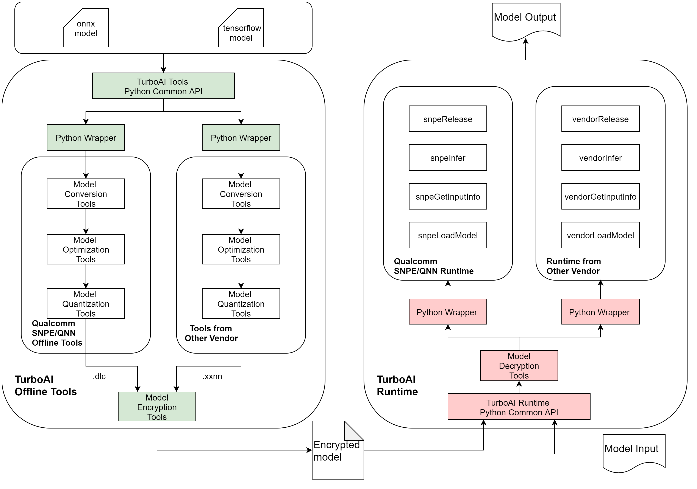

5.1. TurboAI
5.1.1. #TurboAI Overview
The TurboAI toolkit consists of both offline(on host) and runtime(on device) tools.
TurboAITools is the offline tools set of TurboAI, which does model conversion, quantization, optimization and encryption as well. It runs completely on host PC.
Meanwhie, TurboAIRT is the runtime part of TurboAI, which loads the converted model of TurboAITools and does inference on target device SoC.
You should log on Orbbec file server and access [TurboAI toolkit] here (/QH/01_remote/项目/TurboAI/Release).

5.1.3. Release Notes
5.1.3.1. TurboAI v0.0.1
TurboAI v0.0.1 is the first release and it is for Orbbec internal use only.
It provides the following contents:
3rd party tools and libraries from SoC vendors, such as SNPE toolkit and libraries from Qualcomm
Documents and scripts to install and use the TurboAI toolkit
Example codes to run Unet and deeplabv3 networks
5.1.3.2. Supported Platforms
Host: Linux x64
Device: Qualcomm SoC, such as QCS6490, SM870
See detailed documents in TurboAITools and TurboAIRT sub-folders.